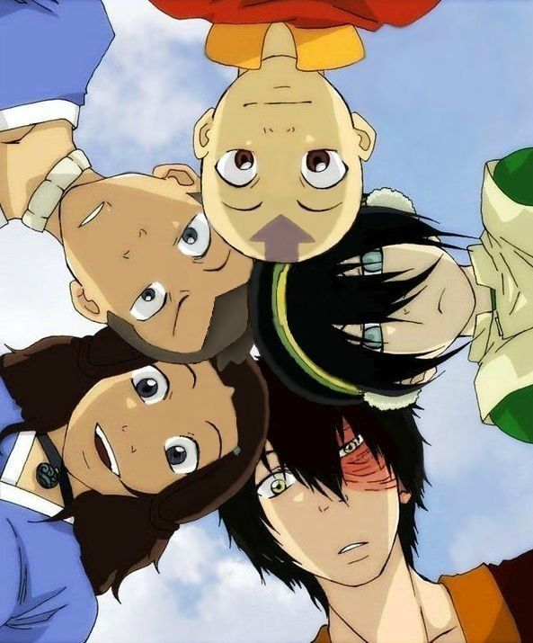

En este universo existen maestros que dominan los 4 elementos,maestros agua,tierra,fuego aire cada cierto tiempo nace un individuo llamado el AVATAR que es poderosisimo por qué puede controlar los 4 elementos, tiene poderes como hablar con los espíritus y puede brillar en un estado conocido como el estado Avatar que es como si este individuo se hiciera super sayayin,dominando los elementos de manera poderosisima....
El Avatar mantiene el equilibrio entre el bien y el mal y gracias a el hay paz en el mundo lo malo es que este dichoso avatar un día desaparecio y en la nación del fuego se volvieron locos dominaron al mundo trayendo casos
